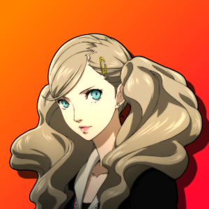

Ann Takamaki | Lovers
Availability
| Sun |
Mon |
Tue |
Wed |
Thu |
Fri |
Sat |
Rain |
Holiday |
| - |
✓ |
✓ |
✓ |
- |
✓ |
- |
✓ |
✓ |
*May not be available near Palace deadline and at night in general*
Notes
Team Member - Maxing it out will give Ann a Persona enhancement
Last Day to attend: November 19th
Activation
Automatic: Event on April 15th
Rank 2
Ann: So, I apologized as well.
2: She's so strong.
1: Are you feeling better now?
*2nd choice is preferable if you don't have persona of matching arcana, otherwise first and second give you the same points*
Ann: ... But in the end, maybe I just didn't believe in her ability.
2: You might be right.
Ann: ... Thanks.
3: I couldn't just ignore you.
Ann: But I'm going to find the answer, I promise.
*Any*
Ann: I hope you'll join me again next time!
*Any*
\
*Gives you a second chance in Shadow negotiation if you initially fail*
Rank 3
Ann: Well, I came up with a way to do it!
*Any*
Ann: So basically, I want you to say stuff to me, and I'll try not to get fazed by it!
*Any*
Ann: C'mon, hit me with your best shot!
*Any*
Ann: Yeah, yeah, yeah! And?
*Any*
Ann: Uh-huh, uh-huh. What else?
3: Can we stop yet?
Ann: Bring it on!
*Any*
Ann: You know... I kinda feel like this won't make our Personas stronger.
*Any*
Ann: It sounds like shoots have been real hectic with all the scramhbling they've had to do for substitutes.
2: Has that happened to you?
Ann: ... Maybe less these days.
2: That freedom sounds nice.
Ann: She had to have seen me, right? Do you think she thought I was cool...?
1: Could be.
*Ann may knock down an enemy if Joker fails to do so*
Rank 4
Ann: It has everything... but it feels like I can't understand any of it. It's honestly kinda scary.
1: I know what you mean.
Ann: But that was when Shiho talked to me. the first thing she said was, "Takamaki-san, your paintings suck."
2: That's hilarious.
Ann: About that female thief anime I used to watch? Well, I thought of something!
1: Tell me.
Ann: And that's why I'm going to try and learn from them!
1: Good idea.
Ann: I'm gonna star in action movies!
3: Good luck with that.
Ann: Do you do anything to train your body?
1: I train everyday.
3: I carry Morgana in my bag.
*Ann may distract the enemy and cancel their next move*
Rank 5
Ann: Do you think maybe Shiho would want one too?
2: Give it up.
Ann: I really screwed that up...
2: She's amazing huh...
Ann: But still, wasn't Mika's fake crying pretty ioncredible?
1: it had grace.
Ann: I-I dunno though, I think I'm pretty good at fake crying myself. I know the perfect technique.
*Any*
Ann: The key is... you don't actually cry!
*Any*
*Ann may convince shadows to ask for less in negotiations*
Rank 6
Ann: I guess you really just need someone to laugh at your if you want to feel better.
1: It seems that way.
Ann: So i agreed without thinking much of it, but it ended up being... pretty overwhelming.
*Any*
Ann: ... Is it because I'm weak?
*Any*
Ann: So I was thinking, and um... what can I do to help Shiho?
2: Show her your own strength.
Ann: But now that I saw her crying, I know I'll find something i can do for her...!
1: I'll cheer you on.
*Ann may cure a party member's status ailment*
Rank 7
Ann: I wonder why...
2: She admires you.
Ann: Why did Mika ask for me
*Any*
Ann: ...
*Any*
Ann: I want to be a real model...!
2: Go get 'em, tiger.
Ann: Obviously that means dieting, cutting back on food, and no matter how tough it is, I'll do any workout!
1: You got this.
Rank 8
Ann: Obviously I want to cut down on my waist size too... and firm up my butt and calves!
2: you have some real guts.
Ann: Huh... There has to be somewhere my vibrant charm will shine, right!?
*Any*
Ryuji: It's simple stuff like that that'll help you keep pushin'.
*Any*
Ann: I need to show her that I'm working hard... and that she doesn't need to worry so much about me.
*Any*
Ann: ... I wonder if this is how Shiho felt with her rehab? Being able to push herself because someone was there with her...
1: That's probably it.
3: You can ask her yourself.
*Ann may survive an otherwise fatal attack with 1 HP remaining*
Rank 9
Shiho: We're so high up...
*Any*
Shiho: So, I wanted to see if she would show up again now.
*Any*
Ann: Because, well... the only way i can help Shiho is to show her how hard I'm working.
*Any*
Ann: i guess... I'm alone again, huh...? (IMPORTANT)
1: You have the others. <--- (Friend Option)
2: You have me. <--- (Romance Option)
*Ann might protect Joker from an otherwise fatal attack*
Rank 10
Automatic
*Ann's Persona receives an enhancement*